Lines (ggplot2)
Problem
You want to do add lines to a plot.
Solution
With one continuous and one categorical axis
# Some sample data df <- read.table(header=T, text=' cond result control 10 treatment 11.5 ') library(ggplot2)
Lines that go all the way across
These use geom_hline because the y-axis is the continuous one, but it is also possible to use geom_vline (with xintercept) if the x-axis is continuous.
# Basic bar plot bp <- ggplot(df, aes(x=cond, y=result)) + geom_bar(position=position_dodge()) bp # Add a horizontal line bp + geom_hline(aes(yintercept=12)) # Make the line red and dashed bp + geom_hline(aes(yintercept=12), colour="#990000", linetype="dashed")
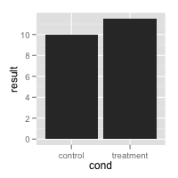 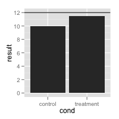 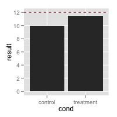
Separate lines for each categorical value
To make separate lines for each bar, use geom_errorbar. The error bars have no height -- ymin=ymax. It also seems necessary to specify y for some reason, even though it doesn't do anything.
# Draw separate hlines for each bar. First add another column to df df$hline <- c(9,12) # cond result hline # control 10.0 9 # treatment 11.5 12 # Need to re-specify bp, because the data has changed bp <- ggplot(df, aes(x=cond, y=result)) + geom_bar(position=position_dodge()) # Draw with separate lines for each bar bp + geom_errorbar(aes(y=hline, ymax=hline, ymin=hline), colour="#AA0000") # Make the lines narrower bp + geom_errorbar(width=0.5, aes(y=hline, ymax=hline, ymin=hline), colour="#AA0000") # Can get the same result, even if we get the hline values from a second data frame # Define data frame with hline df.hlines <- data.frame(cond=c("control","treatment"), hline=c(9,12)) # cond hline # control 9 # treatment 12 # The bar graph are from df, but the lines are from df.hlines bp + geom_errorbar(data=df.hlines, aes(y=hline, ymax=hline, ymin=hline), colour="#AA0000")
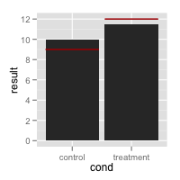 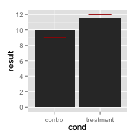
Lines over grouped bars
It is possible to add lines over grouped bars. In this example, there are actually four lines (one for each entry for hline), but it looks like two, because they are drawn on top of each other. I don't think it's possible to avoid this, but it doesn't cause any problems.
df <- read.table(header=T, text=' cond group result hline control A 10 9 treatment A 11.5 12 control B 12 9 treatment B 14 12 ') # Define basic bar plot bp <- ggplot(df, aes(x=cond, y=result, fill=group)) + geom_bar(position=position_dodge()) bp # The error bars get plotted over one another -- there are four but it looks like two bp + geom_errorbar(aes(y=hline, ymax=hline, ymin=hline), linetype="dashed")
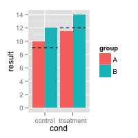
Lines over individual grouped bars
It is also possible to have lines over each individual bar, even when grouped.
df <- read.table(header=T, text=' cond group result hline control A 10 11 treatment A 11.5 12 control B 12 12.5 treatment B 14 15 ') # Define basic bar plot bp <- ggplot(df, aes(x=cond, y=result, fill=group)) + geom_bar(position=position_dodge()) bp bp + geom_errorbar(aes(y=hline, ymax=hline, ymin=hline), linetype="dashed", position=position_dodge())
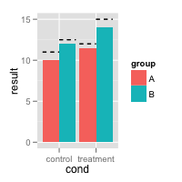
With two continuous axes
Sample data used here:
df <- read.table(header=T, text=' cond xval yval control 11.5 10.8 control 9.3 12.9 control 8.0 9.9 control 11.5 10.1 control 8.6 8.3 control 9.9 9.5 control 8.8 8.7 control 11.7 10.1 control 9.7 9.3 control 9.8 12.0 treatment 10.4 10.6 treatment 12.1 8.6 treatment 11.2 11.0 treatment 10.0 8.8 treatment 12.9 9.5 treatment 9.1 10.0 treatment 13.4 9.6 treatment 11.6 9.8 treatment 11.5 9.8 treatment 12.0 10.6 ')) library(ggplot2)
Basic lines
# The basic scatterplot sp <- ggplot(df, aes(x=xval, y=yval, colour=cond)) + geom_point() # Add a horizontal line sp + geom_hline(aes(yintercept=10)) # Add a red dashed vertical line sp + geom_hline(aes(yintercept=10)) + geom_vline(aes(xintercept=11.5), colour="#BB0000", linetype="dashed")
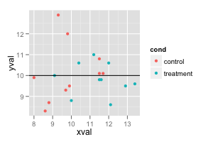 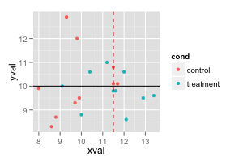
Automatically drawing lines for the mean
It is also possible to automatically compute a mean value for each group, divided one some variable. Note that the y range of the line is determined by the data.
# Add colored lines for the mean xval of each group sp + geom_hline(aes(yintercept=10)) + geom_line(stat="vline", xintercept="mean")
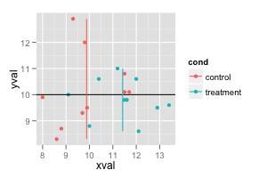
Using lines with facets
Normally, if you add a line, it will appear in all facets.
# Facet, based on cond spf <- sp + facet_grid(. ~ cond) spf # Draw a horizontal line in all of the facets at the same value spf + geom_hline(aes(yintercept=10))
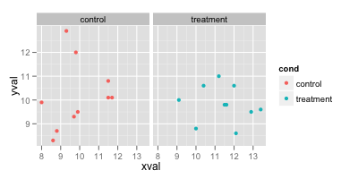 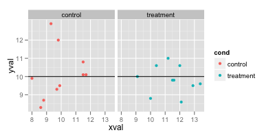
If you want the different lines to appear in the different facets, there are two options. One is to create a new data frame with the desired values for the lines. Another option (with more limited control) is to use stat and xintercept in geom_line().
df.vlines <- data.frame(cond=levels(df$cond), xval=c(10,11.5)) # cond xval # control 10.0 # treatment 11.5 spf + geom_hline(aes(yintercept=10)) + geom_vline(aes(xintercept=xval), data=df.vlines, colour="#990000", linetype="dashed") spf + geom_hline(aes(yintercept=10)) + geom_line(stat="vline", xintercept="mean")
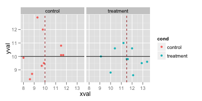 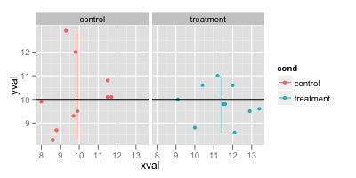
Notes
This code was used to generate the data used in the scatterplots.
set.seed(245) cond <- rep( c("control","treatment"), each=10) xval <- round(10+ rnorm(20), 1) yval <- round(10+ rnorm(20), 1) df <- data.frame(cond, xval, yval) df$xval[cond=="treatment"] <- df$xval[cond=="treatment"] + 1.5